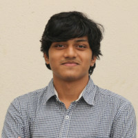
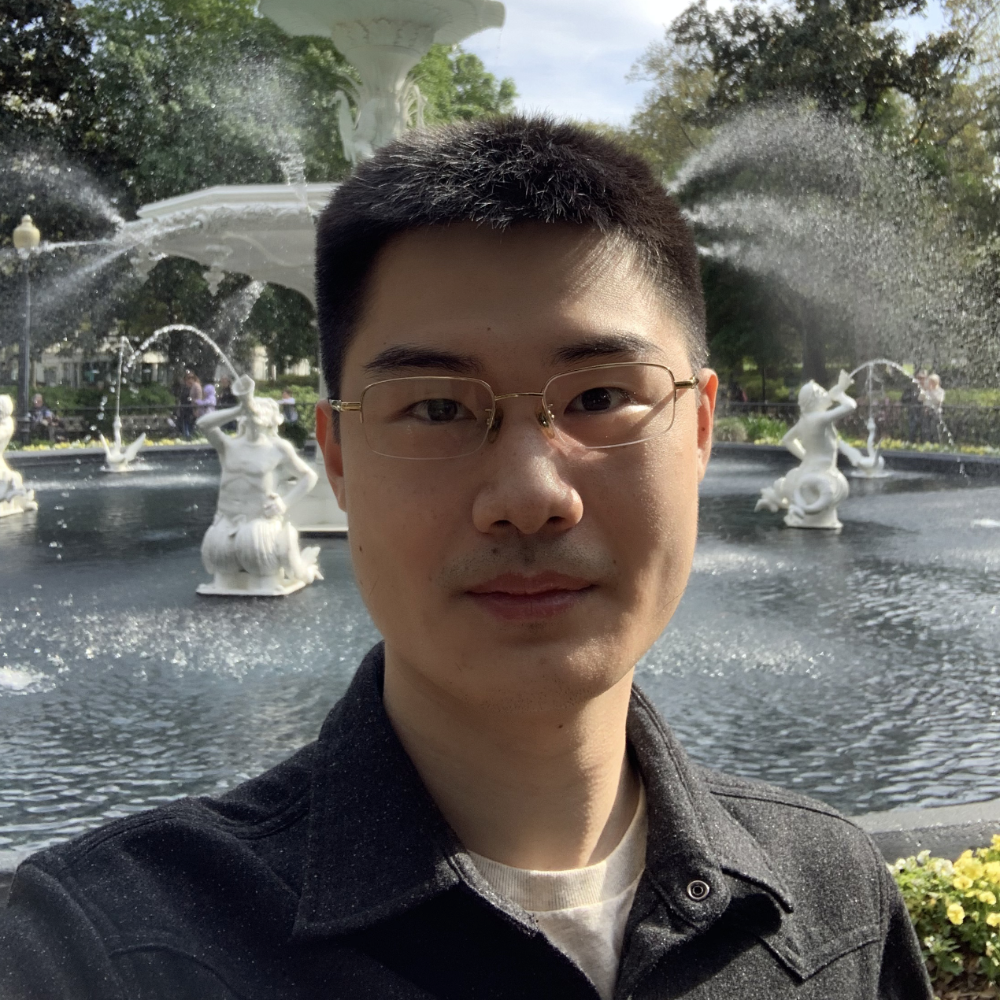
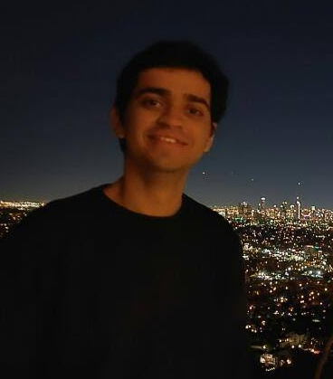

Venue and Date
Time: September 27 – October 1, 2026 (TBD)
Location: Pittsburgh, PA (TBD)
Room: TBD
Online Attendance (Zoom Meeting Room)
Virtual attendance link: TBD
Overview
Sports have long served as a stress test for human agility, coordination, and collective intelligence. Mixed human-robot sports represent the next grand challenge for robotics, requiring machines to move, perceive, decide, and interact safely and fluently alongside people in dynamic, physical environments.
RoboLetics 3.0 champions mixed human-robot sports as the next grand challenge for robotics. The workshop brings together researchers and practitioners to advance:
- Benchmarks for mixed human-robot sports
- Design of humanoids and humanoid-like robots for athletic interaction
- Models and algorithms for control, safety, communication, intent estimation, and decision making
Schedule
| Time | Talk | Comments |
|---|---|---|
| – | Introduction | Dr. Matthew Gombolay |
| – | Talk 1: Hardware design principles required to enable athletic capabilities in humanoid robots. | Dr. Nico Rojas |
| – | Talk 2: Modern learning-based control methods for athletic humanoid behaviors | Dr. Guanya Shi |
| – | Audience Discussion | |
| – | Student Paper Spotlights | 3 min flash talks |
| – | Poster Session & Coffee Break | Hardware Demos / Curated Robot Demo Videos |
| – | Talk 3: Fast-moving robots for mixed human-robot sports | Dr. Nadia Figueroa |
| – | Talk 4: TBD | |
| – | Audience Discussion | |
| – | Breakout Session | 5–6 groups discussing benchmark principles, evaluation frameworks, and potential research directions |
| – | Panel Discussion |
Invited Speakers
Accepted Submissions
- TBD
Call for Submissions
We invite submissions of short demonstration papers of 1–2 pages with video material, or standalone 4-page manuscripts. We welcome contributions related to (but not limited to) the following themes:
- Benchmarks for mixed human-robot sports
- Design of humanoids and humanoid-like robots for athletic interaction
- Models and algorithms for control, safety, communication, intent estimation, and decision making
Relevant RAS Technical Committee Categories
- Embodiment Design
- Humanoid Robotics / Mechanisms and Design / Haptics
- Control — Algorithms for Planning and Control of Robot Motion; Model-Based Optimization for Robotics; Robot Control; Whole-Body Control; Robot Learning; Mobile Manipulation
- Interaction — Multi-Robot Systems; Human-Robot Interaction & Coordination; Human Movement Understanding; Social Robotics; Robot Ethics; Cognitive Robotics; Rehabilitation and Assistive Robotics
- Benchmarking — Performance Evaluation & Benchmarking of Robotic and Automation Systems; RoboCup
Submission Website
TBD
Important Dates
- Paper submission deadline: TBD
- Video demonstration submission deadline: TBD
- Author notification: TBD
- Camera-ready submission: TBD
Submission Rules
- Submissions must be in PDF format following the IEEE Conference template.
- Reviewing will be single-blind (author identities are visible to reviewers).
- Both unpublished original work and previously published work may be submitted.
Organizers



Contact
All questions about submissions or the workshop should be emailed to any of the following people:
- Varshith Sreeramdass — vsreeramdass@gatech.edu
- Kin Man Lee — klee863@gatech.edu